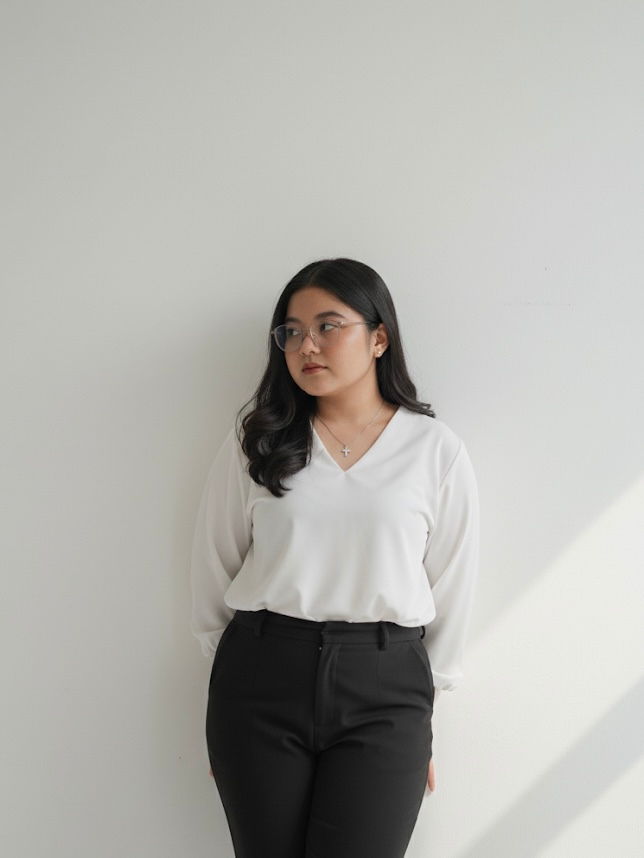

Building reliable systems at the edge of engineering, data, and automation.
I work across network monitoring, control systems, and data-driven engineering — turning raw sensor data and CAD models into dashboards, predictions, and working prototypes.

About Me

Mechatronics and AI graduate working at the intersection of control systems, IoT, and engineering data. My background spans mechanical design, 3D modeling, and system optimization — shaped through internships at DCI Indonesia, Pasifik Satelit Nusantara, and Komatsu Undercarriage Indonesia.
I'm most interested in control & automation systems, IoT-based monitoring, data-driven optimization, and networked engineering solutions — with a focus on building systems that are reliable, efficient, and practical in real-world use, including data center and network operations contexts.
Experience
- Develop automated project monitoring dashboards that streamline document control and reporting workflows.
- Maintain project documentation, version control, and S-Curve progress tracking across the project lifecycle.
- Coordinate with vendors and cross-functional teams to keep deliverables on schedule.
- Designed and modeled a mini antenna in 3D using UG/NX and SolidWorks for satellite communication testing.
- Documented and shared the 3D workflow with the team, enabling faster prototyping.
- Implemented an SNMP-based monitoring system with an Orange Pi mini-PC, integrating multi-sensor parameters into a real-time PRTG dashboard; improved data reliability from 68% to 98% (~30% reduction in data loss).
- Built predictive models (Logistic Regression & Random Forest) for downtime forecasting and validated performance for continuous 24/7 operation.
- Proposed design concepts for Water Treatment Plant (WTP) improvements focused on efficiency and sustainability.
- Built dashboard mockups in Figma and a Power BI prototype for real-time water usage monitoring.
Featured Projects

Built a system to monitor solar-powered modems by integrating environmental and electrical sensors with SNMP, improving data reliability from 68% to 98% and enabling real-time visualization and downtime forecasting.
- Designed and implemented the software–hardware integration and SNMP data pipeline into PRTG Network Monitor.
- Built predictive models (Logistic Regression & Random Forest) for downtime forecasting.
- Tested and validated system reliability under real-time operating conditions.

An assistive device to support blind people in mobility by integrating IoT, machine learning, and sensors — predicting walking paths (guiding block vs. regular road) via a CNN model, displayed through a companion WebApp.
- Developed a CNN deep learning model to classify walking paths.
- Implemented ESP32-Cam for data collection, integrated with an IoT platform.
- Built a WebApp prototype for real-time monitoring and user interaction.

A web platform connecting donors, hospitals, and blood banks in real time — using machine learning for donor prediction, a chatbot, and location-based recommendations to address urgent blood shortages. Selected Top 20 of 398 capstone teams.
- Acted as Team Leader & Project Manager, coordinating schedules and task allocation.
- Built a lightweight TF-IDF FAQ chatbot as ML Developer and integrated it into the web app.
- Aligned ML models with front-end/back-end teams for deployment.

Developed a conceptual design for a Water Treatment Plant at Komatsu Undercarriage Indonesia, focused on efficiency and sustainability, paired with a data-driven monitoring dashboard.
- Created 3D models and technical drawings using UG/NX and AutoCAD.
- Designed dashboard mockups in Figma and a Power BI prototype for water usage monitoring.
- Managed end-to-end data workflows for standardized, reusable dashboards across teams.
Additional Projects
Speedboat Design & Analysis
Full hull and structural frame designed in AutoCAD 2D/3D with assembly drawings and BOM.
Logistik PastiSampai
Python + SQL CRUD package-tracking system with schema design for data integrity.
Redesign: SPOT UPI
UI/UX redesign of a university e-learning portal — wireframes and hi-fi prototypes in Figma.
Self-Balancing Robot (ESP32)
Inverted-pendulum balancing robot; mechanical design in AutoCAD, control logic in Arduino.
Adventure Snakes & Ladders
Role-based board game; designed the data storage layer for scores, sessions, and progress.
ML Explorations
Satellite image classification (CNN), NLP sentiment analysis, and a PM10 air-quality dashboard.
Skills & Credentials
Engineering & Design
SolidWorks, AutoCAD, UG/NX, PLC Programming, Hydraulic & Pneumatic Systems, MATLAB, Arduino
Data & Network
SNMP, PRTG Network Monitor, Power BI, Python, SQL, Machine Learning, Network Monitoring & NOC Support
Languages
Bahasa Indonesia (Native), English (Upper Intermediate)
Certifications
- Machine Learning Engineer — Coding Camp by DBS Foundation (2025)
- Top 20 Capstone Project — Coding Camp by DBS Foundation (2025)
- English for Business Communication (2025)
- PTESOL — Proficiency Test of English (Score 483) (2025)
- IC3 Digital Literacy Certification — Certiport (2023)
- Mini Bootcamp — Ardumeka (2023)
Get in Touch
Open to opportunities in data center operations, project engineering, and network/systems development.